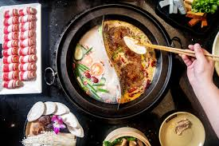

Hotpot

Description
Hotpot, also known as steamboat, is a popular communal dining experience in many Asian countries, particularly in China. It involves simmering a variety of ingredients in a flavorful broth at the center of the dining table. Typically, thinly sliced meats, seafood, tofu, vegetables, and noodles are cooked in the bubbling broth, allowing each diner to customize their meal to their liking. The broth itself is often infused with aromatic spices and herbs, imparting a rich and comforting flavor to the ingredients. Hotpot is not only a delicious meal but also a social occasion, where friends and family gather around the table to enjoy a leisurely and interactive dining experience.
Ingredients
- Broth (can be store-bought or homemade)
- Assorted thinly sliced meats (beef, lamb, pork, chicken)
- Assorted seafood (shrimp, fish balls, squid, mussels)
- Tofu, sliced
- Mushrooms (shiitake, enoki, oyster)
- Napa cabbage, sliced
- Bok choy, baby spinach, or other leafy greens
- Bean sprouts
- Carrots, thinly sliced
- Daikon radish, thinly sliced
- Green onions, chopped
- Cilantro, for garnish
- Dipping sauces (soy sauce, sesame oil, chili oil, etc.)
Steps
- Prepare Broth: If using homemade broth, prepare it in advance. Alternatively, heat store-bought broth in a large pot or electric hotpot at the center of the dining table.
- Prepare Ingredients: Arrange the assorted meats, seafood, tofu, vegetables, and noodles on separate plates or trays for easy access.
- Cook Ingredients: Once the broth is simmering, each diner can begin cooking their desired ingredients by placing them into the broth using chopsticks or a ladle. Cooking times vary depending on the ingredient, but typically range from a few seconds to a few minutes.
- Enjoy: Retrieve cooked ingredients from the broth with chopsticks or a slotted spoon and dip them into your favorite sauces before eating. Continue cooking and enjoying until satisfied.
- Refill Broth: As the broth evaporates or becomes diluted from cooking ingredients, refill it with more broth or hot water to maintain the desired level.
- End with Noodles: Towards the end of the meal, add noodles (such as udon or glass noodles) to the broth to soak up the flavorful essence. Cook until the noodles are tender.
- Finish: Once all the ingredients have been enjoyed, sip on the remaining broth as a comforting finale to the meal. Garnish with chopped green onions and cilantro if desired.